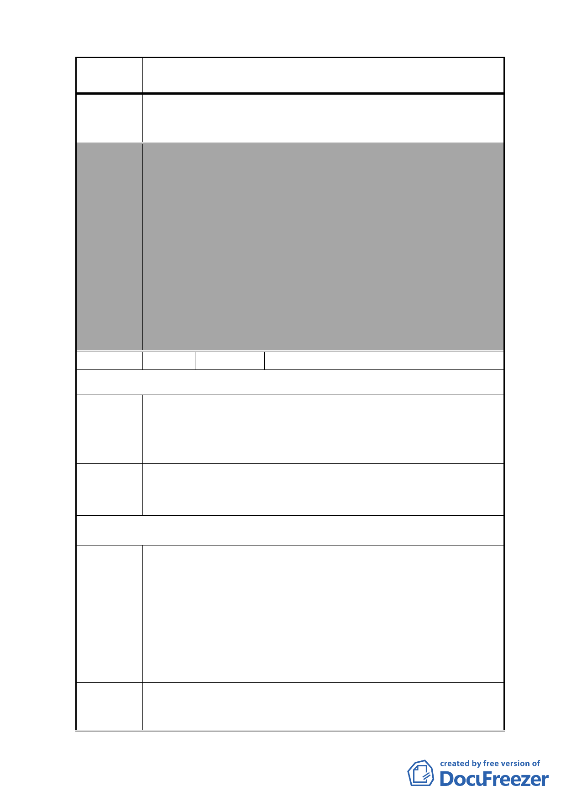

案 名 變更復興北路與長安東路口東北側第三種住宅區為第三種住
宅區（特）細部計畫案
建議辦法
委員會
決議
本案除以下幾點應再作修正外，其餘依市府本次會議所送修
正計畫書及專案小組審查意見回應資料內容通過。
1.本案有關都市設計管制規定，名稱請統一為都市設計管制
「準則」。
2.計畫書第 31 頁（四）第 1 點有關地下開挖率規定，請予刪
除，依現行市府通案處理原則辦理。
3.計畫書「其他」項內增列「所申請之容積獎勵面積後續於
完成都市設計審議核備及領取建築執照後不得任意變更設
計，如後續確有需要辦理變更設計者，則該部分獎勵面積
須重新審查，若已完成超過部分之獎勵容積樓地板施工
者，則不予核發該部分之使用執照」等文字敘述，以為周
延。
編號
5 陳情人 陳忠夫、陳忠信、陳忠義、陳良俊
第 1 次陳情
陳情理由
建議辦法
陳情人所有座落於台北市松山區敦化段 2 小段 405 地號，因
基地位於小巷弄內，將來施工車輛出入不易，且基地面積過
小，已無法有效創造土地經濟使用效益，造成土地資源浪費，
應與鄰地一併規劃，始符合都市景觀整體設計之實益。
此街廓未來之發展將有強烈之商辦色彩，本陳情地號 404 土
地緊鄰本細部計畫區範圍，故應使保留其配合設計及合併規
劃使用之彈性，故納入本細部計畫變更範圍內，始為合理。
第 2 次陳情
臺北市敦化段二小段 449-2 地號等。
1.該計畫道路確有維持通行之需要，以提供當地居民連通。
2.該計畫道路如廢除，則 449 地號與 4493 地號合併建築之開
陳情理由
發量體將會非常龐大，對於週邊土地及建築都造成相當大的
壓迫感，未來該街廓之建築比例差異很大，十分怪異，對於
都市景觀產生很大的負面影響，對於週邊土地很不公平。
3.廢除該計畫道路，對於 449、449-3 地號之地主有巨大利益，
倘犧牲其他人通行權，而圖利特定地主如此非常不公平。
申請人所有座落於臺北市松山區敦化段 2 小段 405 地號，堅
建議辦法 決反對該土地所屬街廓下方之計畫道路（同地號 449-2 地號
- 78 -